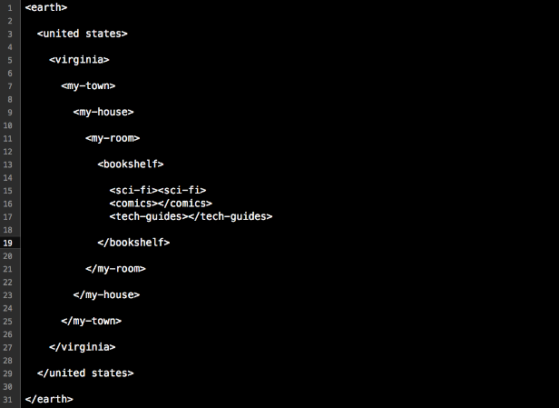
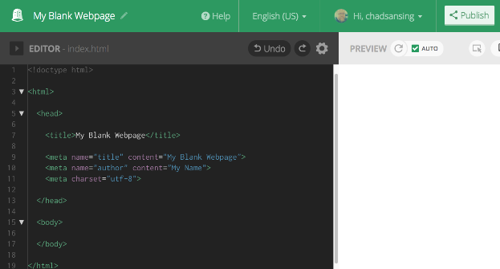

Make Your First Webpage | Build a Blank Page & Beyond
60 minutes
Structure a blank webpage with HTML to learn about markup, code, and compose.
Web Literacy Skills
21st Century Skills
21st Century Skills
Communication Creativity Problem SolvingWeb Literacy Competencies
Code ComposeLearning Objectives
- Understand and explain how to build a basic, blank webpage using high-level HTML tags.
- Identify and explain the basic parts of a webpage including the head and body.
- Code and compose basic meta information about a webpage using appropriate tags and attributes including author, title, and character set.
Audience
- 13+
- Beginner web user
Materials
- A projected computer for the instructor
- Internet-connected computers
- Thimble accounts.
- Markers
- Paper
-
1. Preparation
Learning Progression
In this lesson, your learners will:
- Create tags to describe a room to practice using tags to give structure to a document.
- Use HTML tags to create a blank webpage using this Thimble project.
- Continue practicing with tags and webnpage content by remixing this meme in Thimble.
- Reflect on their learning.
You should...
Try the offline and online activities before you teach the lesson. You can find the online activity here. Click remix and work through the lesson below on your own to try building a blank webpage.
-
2. Introduction
5 minutesWelcome your learners and explain:
Today we’ll be building a webpage. The webpage we’ll build is going to be blank. That way, we can see if we made any mistakes if something shows up on the screen. We’ll learn about the basic parts of a webpage - the tags that act like the roof and foundation of the page and surround everything else.
First, we’ll think of how we might build or structure something familiar, like a room at home.
Then we’ll build a blank page together before reflecting on what we’ve learned so far about structuring pages with HTML.
-
3. Offline Activity
20 minutesTag A Room
Use the scripted bits in pink and steps below to help learners understand how parent and child elements work together to structure a document, like the description of a room. Pause to answer questions, rephrase instructions, and improvise new explanations as needed. You can do this activity on a chalkboard, whiteboard, or large piece of paper, as well.
Here’s an example of the kind of markup and tags you might end up with at the end of the activity:

You should localize your own example for your learners so they see themselves and their community reflected in the demo you run for them.
To begin thinking through how to structure a webpage, let’s start with something more familiar: a room.
Pick a room. It could be your room at home. It could be this room. It could be the best room you could ever possibly imagine.
Look around that room in your mind (or look around this room if you picked it).
How could we use tags to describe that room - where is it in the world? What is inside of it? What’s inside the things that are inside of it?
Let’s look at an example of what I mean.
You should project the next bit, write it out on a board, or gather learners around a large sheet of paper.
Let’s begin a really high-level tag - a tag that can be a parent to a bunch of smaller tags and surround them. Let’s try
<earth>.Add
<earth></earth>tags to your document, leaving a lot of vertical space between them if you’re working on a board or paper.Now, let’s add tags for where we live, like our country, state or province, and city or town. We have to remember to indent each time we move to a smaller tag, though, to show that smaller tags are the children of larger, parent tags, like our country fits inside Earth, and our state or province fits inside our country, and our town fits inside our state or province.
Add tags for your state or province and city or town, indenting each time you go a level smaller.
Next, let’s add a tag for the building our room is in, though I guess you could add a neighborhood tag before that if you wanted.
Add the next level of tags.
Now it’s time to add tags for the objects in the room. It’s possible that some objects, like
<box>might have children objects inside them. It’s also possible for different parts of the room to be equals, though, called siblings. For example, two boxes next to each other would be equals or siblings. They would sit at the same level of indentation as tags. A door and table would be siblings, too, unless the door was somehow inside the table or visa-versa. Let me add some objects to my room.Add a few more sibling elements to the room and give them child elements if it makes sense to do so.
Finally, we travel back out to
</earth>, closing all the parent tags as we go.Show learners how to close each parent tag you opened while moving deeper into your room.
When we close the
</earth>tag, we finish describing the room. Did that make sense? Do you have any questions.Provide some wait time and discuss questions that come up. Ask if any other learners can answer a peer’s question before you do.
Okay - take the next 10 minutes to tag the room you picked. Have a partner check your indentations to see if your parent and child tags make sense. I’ll be around to help. We’ll come back together after 10 minutes to share our work. Let’s go!
Take the last five minutes in this step for volunteers to share their rooms and explain how they tagged them.
-
4. Online Activity
15 minutesAfter learners have a chance to share their rooms and tags with the group, move on to building a blank webpage together using high-level HTML tags. As you work through the scripted bits in pink and the steps below, take time to explain what each tag does for the page. Pause to answer questions, rephrase instructions, and improvise new explanations as needed.
Here is a blank page template with default text in Thimble, and here is the finished product you’re working towards:

Let’s take the same approach we just used to structure our rooms using tags to build a blank webpage. The great thing about a blank webpage is that it’s easy to test: when you’re finished, if something shows up, you’ve got a bug to fix. If the page is blank, you did it right.
Follow along as I work through the tags to structure the page.
You can take your learners into Thimble or work on paper if you’re in a lo-fi or no-fi setting without access to computers or the internet.
First, let’s go remix this blank webpage project in Thimble. Here is the URL.
Post an easily readable shortened link to today’s activity like http://bit.ly/2ccoULI.
When you get there, hit Remix to go into Thimble.
Next, sign in to Thimble. If you haven’t created an account yet, you need an email address to do so. Does anyone need help getting an account or signing in to Thimble?
Help learners create accounts, sign in, or use a class account.
Is everyone ready? Here we go.
First, let’s add
<!doctype html>. This is the document type declaration. It tells a browser that our file is a webpage. This tag is a stand-alone tag. We won’t need to close it.After that, let’s open an
<html>tag. This tells the browser that everything inside the tag is marked-up with HTML, the language of the web. The browser knows how to display all the HTML we’ll include between these tags. We’ll close this tag at the end of the page.Now, let’s open the
<head>tag. The head is where secret information about the page goes. Anything we put in the head should be invisible to readers, but the web browser will use the information to make our page more discoverable and easy to reach online.Let’s add a
<title>tag and call this page. “My Blank Webpage.” Close the</title>tag after you type the title itself. This tag is what makes your browser window or tab show the name of your page up top.Meta tags come next. Meta tags give information about the page. They don’t need to be closed. We’ll use three of them, like this:
Demo these tags and explain them as you go.
We can use something like this to tell a browser and search engine the name of our page:
<meta name=”title” content=”My Blank Webpage”>We can use a meta tag like this to name ourselves as authors:
<meta name=”author" content=”My Name”>Finally, we can use the meta tag called “charset” to tell the browser which character set, or alphabet, to use on the page whenever someone loads it, even if they’re in another country with a different alphabet. Our alphabet is the Western Latin alphabet, and it’s charset code is utf-8. Try it like this:
<meta charset=”utf-8”>Notice how these tags have a few parts each. The meta part is the tag, the parts like name and content are attributes, or characteristics the tags can have, and the parts in quotes are the values or definitions of the attributes.
You should always use meta tags to help people find your page online and give yourself credit for authoring it.
Okay, now let’s close the
</head>like so and move on to the<body>.The head and body are the two main parts of any webpage. The head holds invisible information and the body holds everything you want to display on the screen.
However, since we’re testing a blank webpage today, we’re going to leave the body blank for now. Let’s just open and close it with
<body>and</body>.Finally, we have to close our
</html>tag to tell the browser we’re done writing the page.Publish your project, give it a short description, and then visit the URL, or web address, Thimble gives you for this project. Is the page blank?
Help learners troubleshoot any problems and encourage them to help each other. If you have time left, invite learners to add text or other tags they find to the body of the page and to see what happens when they do.
Learners can publish this page using the Publish button in the upper right-hand corner of the screen and use it as a template for webpages they make later on if they'd
-
5. Read and Revise a Webpage
15 minutesOnce you and your learners have created a blank page, take what you learned about page structure to read and revise this "Keep Calm" project on Thimble.
Ask your learners if they can find the
<head>and<body>of the page, as well as the text to edit in the<body>that will change the words displayed on the screen. -
6. Reflection and Assessment
5 minutesEnd the activity with a brief reflective discussion of how webpages are structured. You can collect and assess learners’ responses in other ways, as well, but be mindful to do so in ways that are fair to all of your learners and allow them each individually the greatest amount of expression possible.
- In your own words, how do tags give structure to a webpage?
- In your own words, how do parent and child tags work together on a webpage?
- What other tags do you think exist? Based on apps and webpages you’ve seen, what tags do you think people might use a lot on webpages?
- What do you think might happen if you forget to close a tag that needs to be closed?
- What questions do you have about the way webpages work? What questions do you have about the way browsers work with them?
Questions? Comments? Suggestions for improvement? Email Chad Sansing, curriculum developer at the Mozilla Foundation.